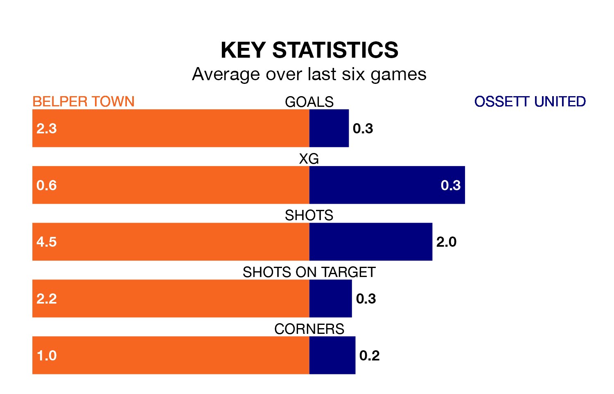

Mid-season relegation candidates Ossett United face a challenge away against high-flying Belper Town at Christchurch Meadow on Saturday.
Ossett United are 18th in the Northern Premier League Division One – East table, and have picked up six wins and five draws in their 25 games to date.
Belper, meanwhile, are second in the standings with 45 points, having won 14 and drawn three of their first 24 matches, and are four points behind table-toppers Stockton Town.
With 52 goals in 24 games so far this season, Belper are the league's highest scorers with 2.2 goals per game. And they are conceding fewer than average, letting in 34 goals at a rate of 1.4 per game.
Ossett, meanwhile, are below average scorers, with 1.0 goal per game, compared to a league average of 1.6. They have conceded 2.0 goals per game.
Town are in good form in the Northern Premier League Division One East, with four wins and a draw from their last six games.
With a win and a draw over that period, United's form is much worse – they have taken four points from 18, compared to the home team's 13.
Belper's last match was on February 3, a 4-0 win against Carlton Town.
Ossett lost 4-0 against Newton Aycliffe last time out, also on February 3.
Updated: 10:28 (UTC), 06/02/24